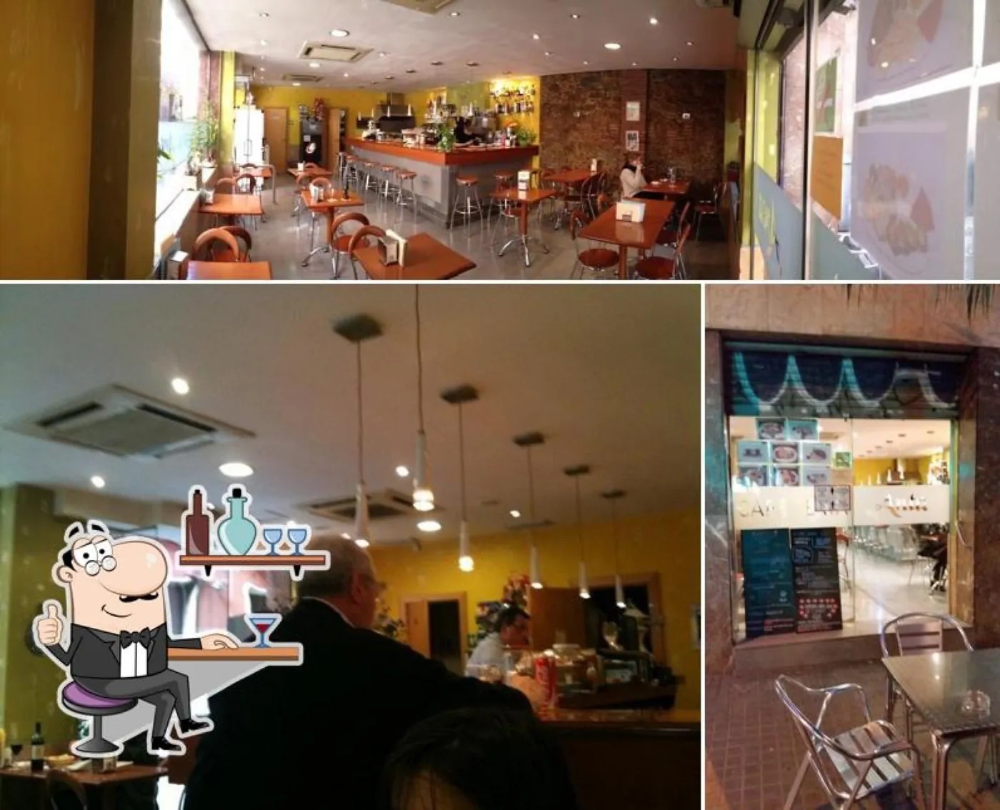
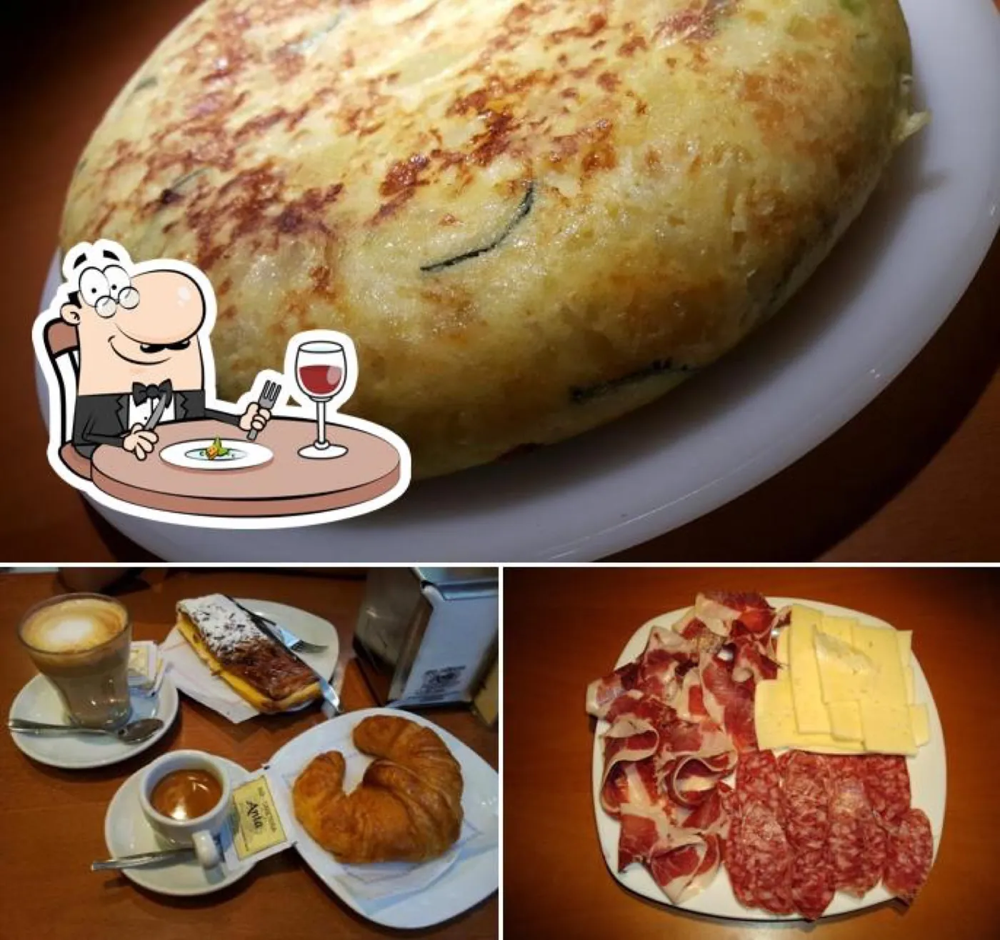
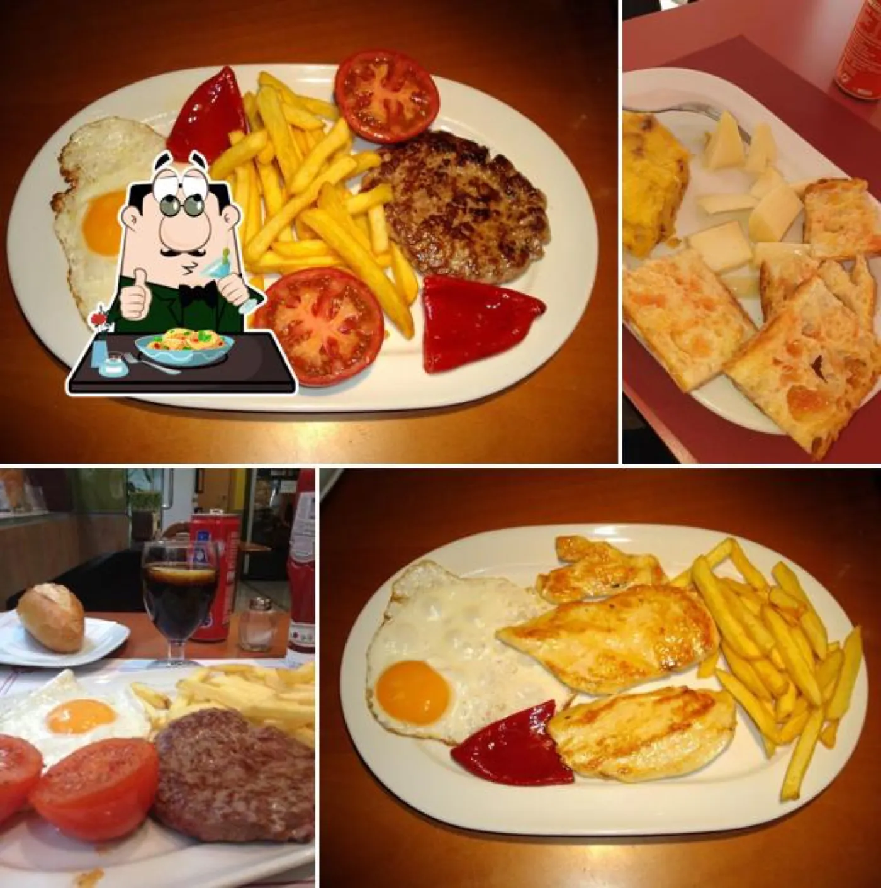

El cafè de Gran de Gràcia, cada dia
Un local petit al número 260, amb la persiana apujada de bon matí i la cafetera ja calenta. Aquí no s'hi ve amb pressa: s'hi ve a seure, a llegir una estona, a quedar amb qui sigui.

Un matí a Anta
Obrim d'hora i anem canviant de marxa. Cada hora demana alguna cosa diferent, i el local es va omplint de qui necessita aquella cosa concreta a aquella hora concreta.
Primer cafè del dia
Espresso, tallat o torrada amb tomàquet. Gent de camí al metro.
Esmorzar tardà del cap de setmana
Ous, alvocat, pa de massa mare i suc acabat de fer. Dissabte i diumenge.
Menjar del migdia
Menú curt, casolà, amb verdura de mercat i un plat del dia que canvia.
Te i pastís
La tarda tranquil·la: infusió, rebosteria casolana, un llibre obert.
Vermut i pa amb tomàquet
Abans de tancar, una estoneta de barra. Vermut casolà, olives, conversa.
El que servim
Poques coses, fetes bé. La carta canvia una mica amb la temporada, però les bases sempre hi són: cafè torrat per baristes, rebosteria del dia i producte del barri.

Cafè d'especialitat
Torrat per baristes catalans, mòlt al moment. Espresso, filtrat, flat white. Si tens una pregunta sobre el gra del dia, te la responem.
Rebosteria casolana
Pastissos, galetes, coques de temporada. Fets aquí o a forns del barri. El de pastanaga és el que més surt.
Menjar del migdia
Menú breu a migdia, amb verdura de mercat, llegums i un plat del dia. Per emportar també.
Esmorzar tardà dissabte i diumenge
Ous cuinats com vulguis, torrada de massa mare, alvocat, salmó, pancakes. Cafè o suc inclòs en molts plans.
Vins del barri
Una petita selecció de vins catalans i vermut casolà per tancar el dia amb calma.
Sobre Anta

Anta és al tram alt de Gran de Gràcia, gairebé tocant Plaça Lesseps, en aquell encreuament on el barri comença a obrir-se i encara té ritme de poble. Un local petit, amb taula a fora quan el temps acompanya, persianes verdes i la cafetera sempre encesa.
Vam obrir fa anys pensant en el més senzill: un bon cafè, una bona torrada i lloc per seure sense pressa. Amb el temps s'hi van sumar l'esmorzar tardà els caps de setmana, el menú del migdia i el vermut abans de tancar. La gent del barri entra a esmorzar, els veïns pugen a buscar pa amb tomàquet, hi ha qui ve a treballar amb el portàtil i s'hi queda tota la tarda.
No som un lloc de pas. Som una cafeteria de barri: el tipus de local on el cambrer ja sap què vols abans de demanar-ho, i on si et falta sal te la porta sense dir res.
— Anta, GràciaEl que ens pregunteu
Feu esmorzar tardà els caps de setmana?
Sí, dissabte i diumenge des de les 10:30 fins a mitja tarda. És la nostra hora més concorreguda, millor reservar.
Accepteu gossos?
Sí, els gossos tranquils són benvinguts a la sala i a la terrassa. Tenim bol d'aigua al costat de la porta.
Hi ha terrassa a Gran de Gràcia?
Tenim algunes taules a fora quan el temps ho permet. Petita, però ben orientada al sol del matí.
Treballeu amb producte local?
El cafè el torra una microtorrefactora catalana. Pa i dolços de forns del barri, verdura del mercat de la Llibertat sempre que podem.
A la Vila de Gràcia
08012 Barcelona · Vila de Gràcia
- Dilluns07:00 – 18:00
- Dimarts07:00 – 18:00
- Dimecres07:00 – 18:00
- Dijous07:00 – 18:00
- Divendres07:00 – 18:00
- Dissabte08:00 – 19:00
- DiumengeTancat